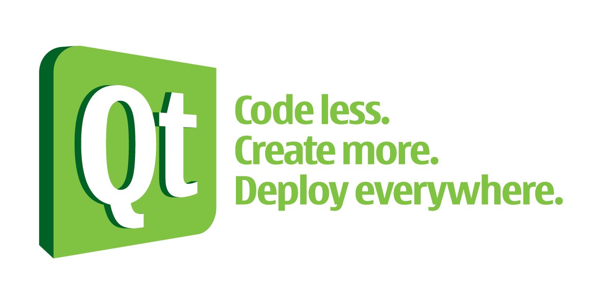

感謝您對「自由軟體鑄造場」的支持與愛護，十多年來「自由軟體鑄造場」受中央研究院支持，並在資訊科學研究所以及資訊科技創新研究中心執行，現已完成階段性的任務。 本網站預計持續維運至 2021年底，網站內容基本上不會再更動。
也紀念我們永遠的朋友 李士傑先生（Shih-Chieh Ilya Li）。
也紀念我們永遠的朋友 李士傑先生（Shih-Chieh Ilya Li）。
活動  說明 - Qt 自由軟體開發與智慧型手機應用研討會
說明 - Qt 自由軟體開發與智慧型手機應用研討會


活動
Qt 自由軟體開發與智慧型手機應用研討會
- 時間:
- 2011.05.27 09:00 - 17:30
- 地點:
- [台北] 中央研究院資訊科學研究所106室
- 分類:
- 研討會
- 聯絡人:
- 彭冠雯 ossfworkshop@openfoundry.org
- TEL:
- (02)2788-3799#1469
合辦單位
議程簡介
Qt 是一個跨平台的開發套件，他被廣泛運用於開發 GUI 程式，可以幫助程式設計師在各種不同的作業系統與機器上實現他的想法。本研討會主旨在針對 Qt 作深入淺出的介紹，讓參與者可以了解如何使用 Qt、以及相關的 Qt 開發技巧。時間 | 議程 | 講者/主持人 |
|---|---|---|
| 09:00-09:20 | 報到 | |
| 09:20-09:30 | 開幕致詞 | OSSF 計畫主持人 莊庭瑞老師 |
| 09:30-11:00 | Qt 介紹與跨平台展示 | Movial Taiwan 軟體工程師 陶奎志 |
| 11:00-11:10 | 休息與交流 | |
| 11:10-12:00 | Qt 與 MeeGo | Movial Taiwan 軟體工程師 陶奎志 |
| 12:00-13:00 | 午餐與休息 | |
| 13:00-15:00 | 實作開發技巧，如何使用 Qt 的源碼與貢獻源碼 | Movial Taiwan 軟體工程師 陶奎志 |
| 15:00-15:20 | 休息與交流 | |
| 15:20-17:00 | Qt Quick 與 MeeGo | Movial Taiwan 軟體工程師 陶奎志 |
| 17:00-17:30 | OpenFoundry 服務介紹與抽獎時間 |
講者簡介
陶奎志（David Tao）
陶奎志（David Tao），目前任職於 Movial Creative Technologies。本身對於 Embedded Linux 與 Qt有非常大的興趣與熱情，也不斷使用這些技術，並應用在自己的工作與生活中。活動資訊
- 對象︰各大校園師生、對此議題有興趣者。
- 人數︰60人。
- 費用︰免費。
注意事項
- 報名時請務必填寫正確可以聯絡到您的 E-Mail，以利活動變動通知之用。
- 若您報名後因故不克前來參加，請您持報名序號與報名e-mail到此取消報名。
- 您的報名資料將只用於本次及未來的工作坊活動宣傳及問卷，不會傳遞給任何第三者。
- 主辦單位保留更改活動內容及相關事項之權利。
本活動已停止報名，感謝您的支持與參與。
已報名會員:0
其他人:56

自由軟體鑄造場 製作 最佳瀏覽狀態：IE7或Firefox2.0以上 (建議使用Firefox) ‧ 解析度1024*768
E-Mail：contact@openfoundry.org Address：台北市南港區研究院路2段128號 中央研究院資訊科學研究所 . 隱私權條款. 使用條款
E-Mail：contact@openfoundry.org Address：台北市南港區研究院路2段128號 中央研究院資訊科學研究所 . 隱私權條款. 使用條款